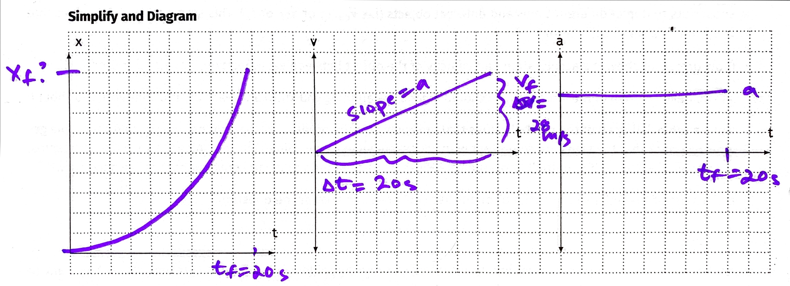
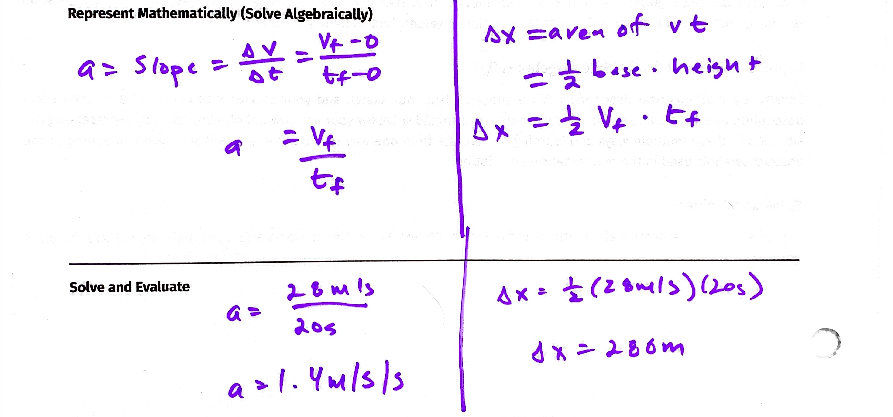

class: center, middle .title[🤔 Problem-Solving Motion Probelms] .subtitle[📈 Using Graphical Solutions] .author[👨🏻🏫 Nathan Porter] .institution[🏫 Maple Hill High School] .coauthor[] .institution[] .date[📅 2020-2021] .center[] <!--.footnote[Created with [{Remark.js}](http://remarkjs.com/) using [{Markdown}](https://daringfireball.net/projects/markdown/) + [{MathJax}](https://www.mathjax.org/)]--> --- class:center, middle #Physics is *more* than plugging numbers into equations! --- #Multiple Representations: -- - ***Verbal***: Describes the motion of the car in a narrative manner. -- - ***Pictorial***: A picture shows the initial and final motion of the car. -- - ***Diagrammatic***: The picture is simplified and shows the motion of the car over multiple clock readings. -- - ***Graphical***: Three representations that show how the position, velocity, and acceleration of the car vary over time. -- - ***Mathematical***: Describes the velocity of the car as a function of time and the position of the car as a function of time. --- #Problem Solving Process: 1. Sketch and Translate -- 2. Simplify and Diagram -- 3. Represent Mathematically -- 4. Solve + Evaluate --- #1. Sketch - A ***sketch*** of the object or objects at the beginning of the motion, at the end of the motion, and any important points in between where the motion changes (i.e. if the acceleration of the object changes). -- - A ***coordinate system*** Label the axes and the origin (position 0). -- - ***Symbols*** that represent the time, position, and velocity of each object at each moment you have draw above. Use subscripts to depict different times and different objects (i.e. `\(\vec{v}_{car1,i}\)` or `\(\vec{x}_{2f}\)` or `\(t_2\)`). This step *defines* the symbols that you will use later in calculations. -- - Draw ***arrows*** to show the acceleration and velocity of the object between each position (or write `\(\vec{a}=0\)` or `\(\vec{v}=0\)`) --- #1. Translate Now that you have a sketch of the situation you should organize everything you know and want to find. Therefore you should: -- - Make a ***table*** listing all of the symbol values that are known for the problem or that can be determine from simple geometry. Check that the signs are consistent with your sketch and its coordinate system. Also list known relationships, such as `\(\vec{v_1}=\vec{v_2}\)`, even if you don't know the values yet. At this point do any unit conversions that are necessary. -- - Make a ***list*** of the unknown quantity or quantities you'll need to answer the question. --- #2. Simplify and Diagram (Physics Diagrams) - From our sketch we will no create physics diagrams...for motion this includes: -- - position vs. time graph -- - velocity vs. time graph (most useful) -- - acceleration vs. time graph --- #3. Represent Mathematically - mathematical description of the process -- - turn physics diagrams into equations: -- - use area of v-t to calc displacement -- - use slopes to calculate velos, or accelerations -- - use position functions to find final positions --- #4. Solve + Evaluate - substitute in given quantities and solve! - Evaluate: does this number make sense? Is it a reasonable solution? --- #Example: A poorly tuned car accelerates from rest to a speed of 28 m/s in 20 seconds. What is the acceleration of the car? How far does the car travel in this time? --- #Sketch and Translate .center[<img src="../figures/Sketch.jpg" width = "1000"/>] --- #Simplify and Diagram .center[] --- #Represent ➡️ Solve: .center[]